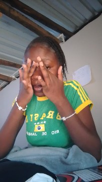
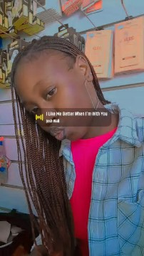

About Me
My name is Regina Nabiye a second year student studying computer science at Mulungushi Universit.Since i was a child,I have enjoyed learning about computers.As technology continues to grow I believe that artificial intelligence is becoming an esssential part of our lives.One thing I love about technology is coding, and I am working towards becoming a good coder one day.I also enjoy learning from other people because it helps me understand and remember things faster.At the end of this course, I hope to use the skills i gain in the fields I will work in and inspire others to develop their own skills as well.
My top Hobbies
- Coding
- listening to music
- Going out with friends
My Learning Plan
I plan to improve my web development,codin,interpretation and machinelearning skills through regular practice
Steps to improve my We Skills
| Day | topic | practice task |
| Monday | HTML | practice HTML links and pages. |
| Friday | CSS | practice styling web pages. |
| Sunday | Data $ ML | prsctice data interpretation and ML |
My Photos

"
"My Media
My Introduction Video
This video introduces more about myself and the field am in
My Audio Recording
I describe coding has one of my hobbies and explAIN why i am interested in studying webtechnologies